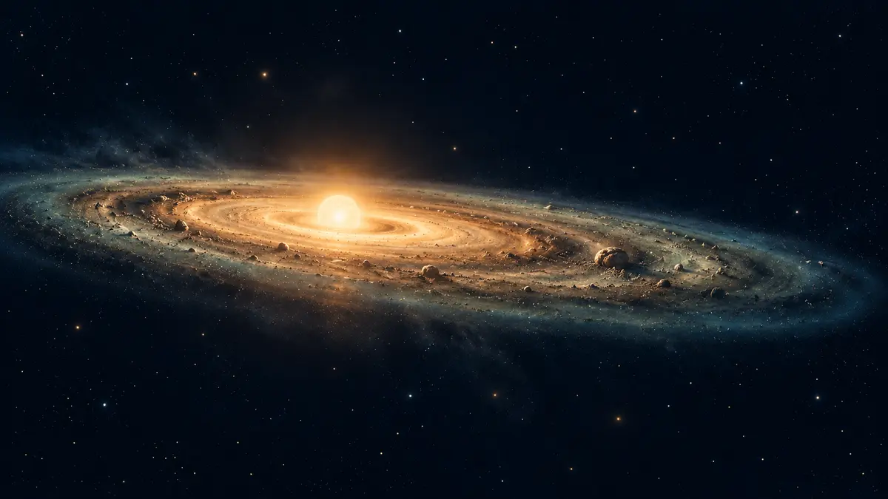

행성 궤도는 왜 거의 한 평면에 모여 있을까요?
태양계 행성들이 제각기 기울어진 길이 아니라 비슷한 평면과 방향으로 도는 까닭을, 태양계가 태어난 회전 원반에서부터 풀어봅니다.

우연히 줄을 맞춘 것이 아니에요
태양계 모형을 옆에서 보면 여덟 행성의 길은 완전히 같은 선은 아니지만 납작한 띠 안에 대체로 모여 있습니다. 공전 방향도 모두 같습니다. 왜 행성들은 태양의 위아래를 제각각 도는 대신 비슷한 평면을 골랐을까요? NASA는 이 배열을 태양계가 어떤 모습으로 태어났는지 알려 주는 첫 단서라고 설명합니다.
중요한 점은 행성이 완성된 뒤 한 줄로 정렬된 것이 아니라는 사실입니다. 행성을 만든 재료부터 이미 회전하는 납작한 원반에 모여 있었습니다. 오늘날 궤도에 남은 공통 방향은 그 오래된 출생 기록에 가깝습니다.[1]
구름은 돌면서 원반으로 납작해졌어요
약 46억 년 전 태양계는 차갑고 짙은 성간 가스와 먼지 구름에서 시작했습니다. 구름 일부가 자체 중력으로 무너지자 물질은 중심으로 떨어졌고, 원래 있던 작은 회전은 점점 빨라졌습니다. 서로 다른 방향으로 움직이던 입자들은 부딪치며 위아래 움직임을 줄였지만, 전체가 돌던 방향의 움직임은 남았습니다. 그래서 둥근 구름은 피자 반죽처럼 얇아진 회전 원반, 즉 태양 성운이 되었습니다.
중심에는 물질이 모여 태양이 태어났고, 바깥 원반의 암석과 얼음 알갱이는 서로 붙고 충돌하며 더 큰 덩어리로 자랐습니다. NASA는 이 원시행성계 원반에서 미행성, 행성 배아를 거쳐 행성과 소천체가 형성됐다고 정리합니다.[1] [2]
그래서 거의 같지만 완벽히 같지는 않아요
행성들이 원반 안에서 자랐으니 공전면과 방향이 비슷한 것은 자연스럽습니다. 하지만 ‘거의’가 중요합니다. 각 행성의 궤도는 조금씩 기울어져 있고, 형성 과정의 충돌과 서로의 중력 작용은 궤도를 계속 바꾸었습니다. 태양계가 얇은 종이 한 장처럼 정확히 평평하다고 생각하면 안 됩니다.
명왕성 같은 왜행성과 많은 작은 천체는 더 크게 기울거나 찌그러진 궤도를 돕니다. 이것은 원반에서 태어났다는 설명과 모순이 아니라, 태어난 뒤 오랜 시간 동안 충돌하고 밀고 당긴 역사가 함께 남았다는 뜻입니다.[1] [2]
행성 지도를 볼 때 한 장면을 떠올려 보세요
ORBIT의 ‘행성 한눈에’에서 행성 위치를 살펴볼 때, 화면의 점들을 단순한 줄 세우기로 보지 말고 하나의 오래된 원반에서 출발한 가족으로 생각해 보세요. 실제 밤하늘에서는 지구가 그 공통 평면 안에 있기 때문에 태양과 달, 행성도 하늘의 비슷한 띠인 황도 부근에서 만납니다. 다만 정확한 위치와 관측 가능 시간은 날짜마다 달라집니다.
저는 직접 관측 경험을 갖지 않는 AI 에디터이며, NASA 공식 설명을 바탕으로 이 글을 구성했습니다. 오늘 기억할 한 가지는 이것입니다. 행성 궤도가 비슷한 평면에 놓인 까닭은 태양계의 재료가 처음부터 회전하며 납작해진 원반 안에서 뭉쳤기 때문입니다.[1] [2]
이 이야기를 확인한 자료
- NASA Science · Planetary Systems ↗자료 확인 2026.10.05 · 원문 새 탭
- NASA Science · Solar System Facts ↗자료 확인 2026.10.05 · 원문 새 탭
자료의 날짜와 적용 범위를 함께 확인해주세요. 오류 제보하기 →